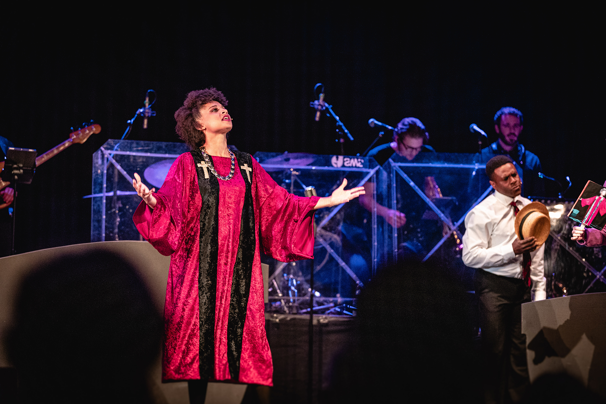
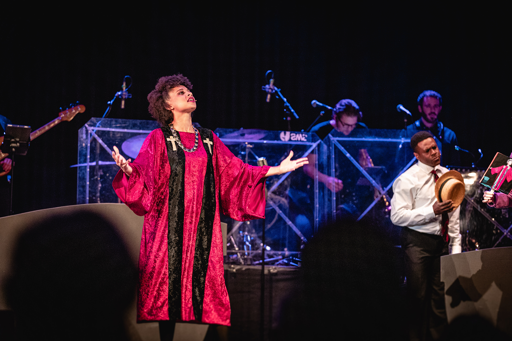

Blues Brothers - Das Musical
Sie werden niemals geschnappt. Sie sind unterwegs im Auftrag des Herrn.

Der Kultfilm als Musical!
Acht Darstellerinnen und Darsteller sind mit einer sechsköpfigen Liveband im Auftrag des Herrn unterwegs und bringen die legendären Blues Brothers in einer rasanten Inszenierung zurück auf die Bühne.

„Wir sind unterwegs im Auftrag des Herrn.“ Dieser Satz von Dan Aykroyd alias Elwood Blues ist im Jahr 1980 in die Filmgeschichte eingegangen: Die „Blues Brothers“ Jake und Elwood wollen ihre alte Band wieder zusammenbringen, um ihr einstiges Waisenhaus vor dem e Verkauf zu retten. Dass dabei fast alles schief geht, was schief gehen kann, war zu erwarten. Nicht zuletzt aufgrund der zahlreichen prominenten Gäste im Film wie James Brown, Cab Calloway, Ray Charles und natürlich Aretha Franklin hat der Film längst Kultstatus erreicht.
Regie: Gerhard Weber
Choreografie: Julius P. Williams III
Musikalische Leitung: Philipp Lang
Jake Blues
Florian Hinxlage /
Philip Richert
Elwood Blues
Philipp Lang
Aretha/Reverend
Vanessa Weiskopf
Curtis/Ray
Julius P. Williams III /
William Baugh
Bob/Murph
Stephan Wurfbaum
Ensemble
Irene Eggerstorfer (Dance Captain)
Katharina Maria Abt
Luisa Meloni
Maria-Lena Reimer
Pauline Sell
Blues Brothers – an drei Abenden erlebte ein begeistertes Publikum in Donzdorf den Kultfilm als Musical … Die Handlung blieb auf der Spur der wichtigsten Filmstationen, illustrierte sie durch musikalische Einlagen, unzählige Kostümwechsel der Darstellerinnen und Darsteller, die jeweils in mehrere Rollen schlüpften und nicht zuletzt durch schauspielerische Meisterleistungen … Das Publikum schmiss sich weg vor Lachen, wenn Jake und Elwood bei den per Lenkrad angedeuteten Fahrten jedem Komiker Konkurrenz machten … Das Publikum feierte bei jedem Klassiker die Band und die Stimmen … Die Reise der Blues Brothers endete in nicht enden wollendem stehenden Applaus.
Neue Württembergische Zeitung, 11.10.2021, Inge Czemmel
Die Blues Brothers, als Filmtypen seit gut 30 Jahren legendär, machen auch als Musicalhelden eine Menge Spaß. Beim Gastspiel in der Ritterakademie erntet ein hoch engagiertes Team Standing Ovations … Regisseur Gerhard Weber erzählt die Geschichte skizzenhaft. Szenen und Dialoge spielen sich in Comic-Kürze ab. Mehr braucht es nicht, denn alles steht im Dienst der Musik. Die kommt bärenstark rüber … Um sie herum wirbelt ein kleines, durch die Bank stark singendes, spielfreudiges Team in vielen Rollen und mit entsprechend schnellen Kostümwechseln … Im Publikum sitzen natürlich einige formvollendet behütete und sonnenbebrillte Blues Brothers. Sie rocken wie alle im Saal mit an diesem vor allem musikalisch komplett überzeugenden Abend, Zugaben inklusive.
"Blues Brothers"-Musical: Unterwegs im Auftrag des Herrn, Landeszeitung, 25.10.2021, Hans-Martin Koch
Die Konzertdirektion Lang brachte eine temporeiche und witzige Bühnenfassung nach des Kultstreifens von 1980 nach Solingen, die schon nach wenigen Augenblicken die Herzen des Publikums erobert hatte und vielen im Saal ein Dauergrinsen ins Gesicht zauberte, das erst nach dem Schlussapplaus nachließ … Das Publikum wieherte vor Lachen, wenn die beiden Jungs bei den per Lenkrad angedeuteten Fahrten in dieser ‚Bullenschaukel‘ die Fahrgeräusche selbst machten … Unterstützt wurde das lustvolle Spiel von weiteren sechs Darstellern, die nicht nur sprachen und sangen, sondern mit Choreografien farbige Akzente setzten. Dazu gab es viel ‚Rhythm and Soul‘. Dank einer souveränen Band und stimmstarken Sängern stimmte die Musik jederzeit und ließ atmosphärische Leichtigkeit in den gut gefüllten Saal schwappen … Am Ende allen Schlamassels stand nicht nur das Happy End, sondern tosender Beifall mit zustimmenden Pfiffen.
Kultfilm „Blues Brothers“ witzig auf die Bühne gebracht, Solinger Tageblatt, 13.02.2023, Jutta Schreiber-Lenz